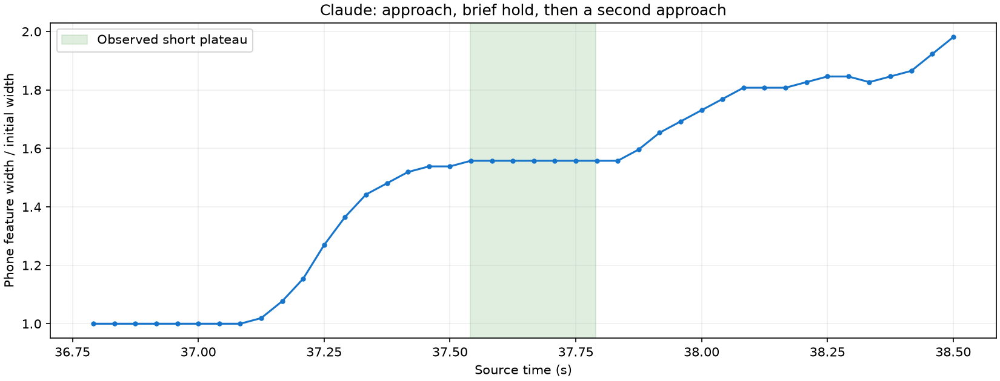
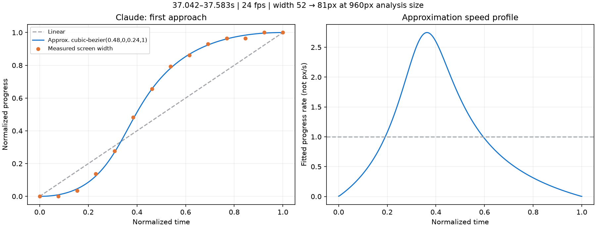
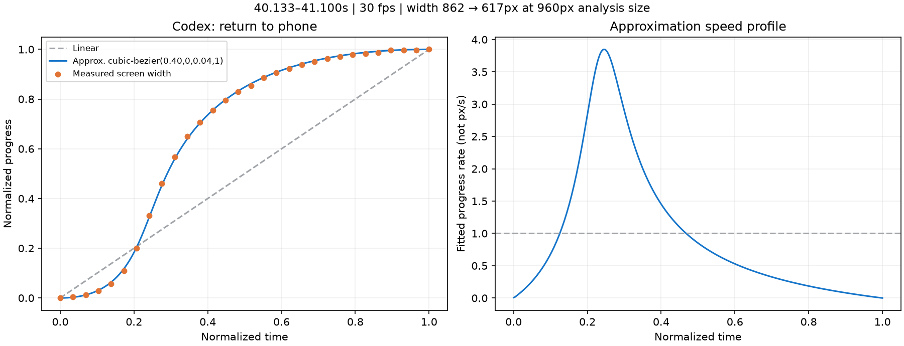

画面设计 / 时间分配 / 运动进度
同样的路程，速度安排可以不同
橙色为成片宽度量测的归一化进度，蓝色为近似拟合，灰绿色为匀速。下面用同一个平面形状演示差异，不是原片重制。
量测样本（帧间线性连接）
拟合 cubic-bezier
线性对照
拟合依赖所选区间与量测误差，不能证明作者用了这组参数。图形演示的位移和外观仅用于对照；量测本身是屏幕宽度变化。
为什么需要分段，而不是只挑一个 ease

Claude 的局部序列里，第一次推近后有短暂停留，再开始第二次推进。安排动作时要同时决定观看目的、终态构图和停留，不能只换曲线预设。
查看拟合图和量测说明


24fps / 30fps 原生帧量测；分析图宽960px，边界约有1px不确定性。第一段总宽度变化仅29px，应避免过度解读小数。右侧速度图是拟合函数的导数，不是直接测得的像素速度。
查看原始数值与来源